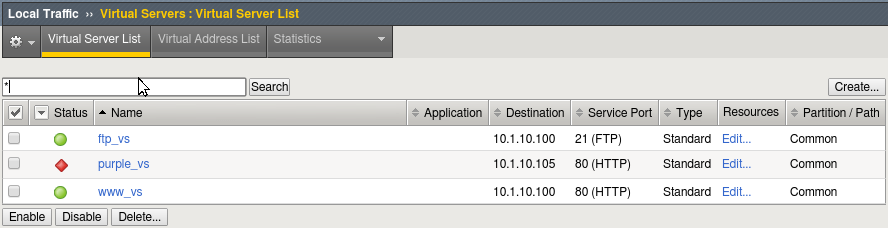

Unofficial - F5 Certification Exam Prep Material > F5 201 - TMOS Administration Labs (V13.1) > Module 1 – Accessing the Lab, Networking and BIG-IP Traffic Flow Source | Edit on
Accessing the Lab Environment¶
To access F5’s Unified Demo Framework (UDF) environment you will have to have an active account.
If you have UDF account and you have received a confirmation email from noreply@registration.udf.f5.com for the 201 Certification Lab - TMOS Administration. You are ready to access the labs.
If you did not receive the confirmation please check your junk folder or simply try your credentials (you can only see labs you have been invited to). If you still cannot gain access to the course notify the instructor.
If you do NOT have an active account you should have received an email from noreply@registration.udf.f5.com with you username (email address) and a temporary password. If you did not receive an email please check your junk mail folder to see if the email was flagged as spam. Activate your account by setting your password and then proceed below.
Accessing the UDF labs¶
You will be access the labs using the F5 Unified Demo Framework (UDF). Chrome is the preferred browser for UDF access. Other browsers may work but are not supported.
- Open your browser and navigate to the F5 UDF https://udf.f5.com
- Select the Non-F5 Users option and log in using your UDF credentials.
Important
You should retain these credentials, as they will be required to any access future F5 UDF courses you attend in the F5 UDF environment
- You should see the event(s) under Happening now. Find the 201 Certification Lab - TMOS Administration event and click on the Launch link at the far right.
- Click the Join button. *Manage SSH Keys should not be required.*
- At the top you will see Documentation and Deployment. In the Documentation section you can elect to leave the session, see how long the session will last and course documentation.
- Click on the Deployment tab. The VM instances will take a few minutes to provision and will be ready when you have a green arrow.
- To access an instance, click the Access link and select the type of access you want from the drop-down menu.
Note
If you use the Web Shell use ctrl-shift-v to paste.
Lab Environment¶
Important
The F5 201 lab guide is written with the assumption that the lab ubu-jumpbox will be used as the client for testing and accessing the BIG-IPs. Although you are welcome to use the direct access links provided for configuring and viewing the BIG-IPs. The lab will flow more smoothly using the ubu-jumpbox.
| Components | Mgmt IP | Access | Username | Password |
| bigip01 | 10.1.1.4 | GUI | admin | f5UDFrocks! |
| 10.1.1.4 | SSH | root | f5UDFrocks! | |
| bigip02 | 10.1.1.5 | GUI | admin | f5UDFrocks! |
| 10.1.1.5 | SSH | root | f5UDFrocks! | |
| ubu-jumpbox | 10.1.1.6 | RDP | f5student | f5UDFrocks! |
| NGLAMP | 10.1.1.7 | SSH | f5student | f5UDFrocks! |
| 10.1.1.7 | webmin | f5student | f5UDFrocks! |
Accessing the Jumpbox BIG-IP VE System Configuration¶
Go to the Components tab and select the Access drop down menu and select xRDP and the screen size. Log on with the credentials in the table above.
Access your BIG-IP (bigip01) and verify it is prepped and ready¶
From the jumpbox open a new web browser from the bottom bar and access https://10.1.1.4. Log into the BIG-IP VE system using the following credentials:
Username: admin
Password: f5UDFrocks!

Check the upper left-hand corner and ensure you are on the active device the status should be ONLINE (ACTIVE). Most deployments are active-standby and either device could be the active device, so you should always check.
Go to Local Traffic > Virtual Servers and verify your virtual server states. They should match the image below.
Note
This BIG-IP has been pre-configured and the purple_vs virtual server is offline by design.
If everything is in order go on to the Networking the BIG-IP lab.